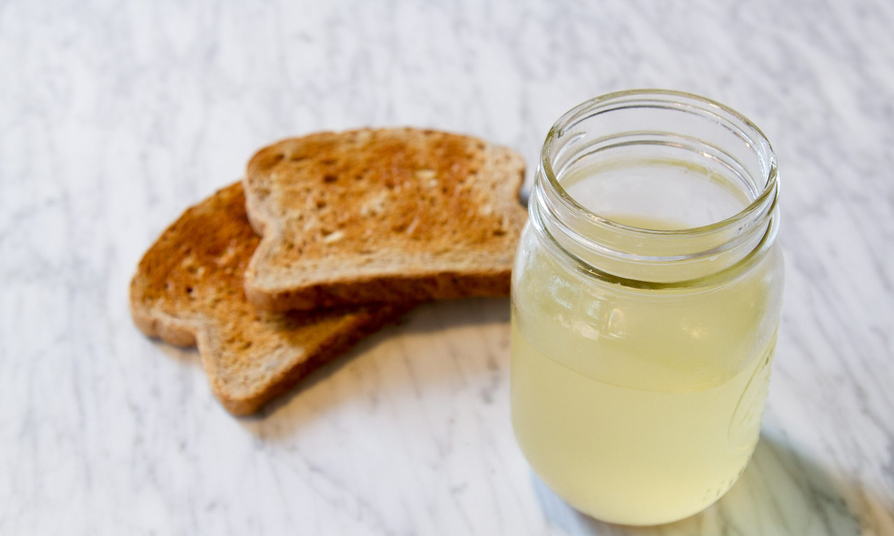

Toast Water
Home

How to make toast water at home
Toast Water is a deluctable and refreshing beverage that has been enjoyed for generations. It is easy to prepare and a pleasure to enjoy. Come make it with us!
Ingredients
Directions
- Break toast in pieces, add to preferred drinking cup and add water and allow to stand 1 hour.
- Strain through cheesecloth, season, and serve hot or cold.
- Enjoy the next 24 hours.
Home